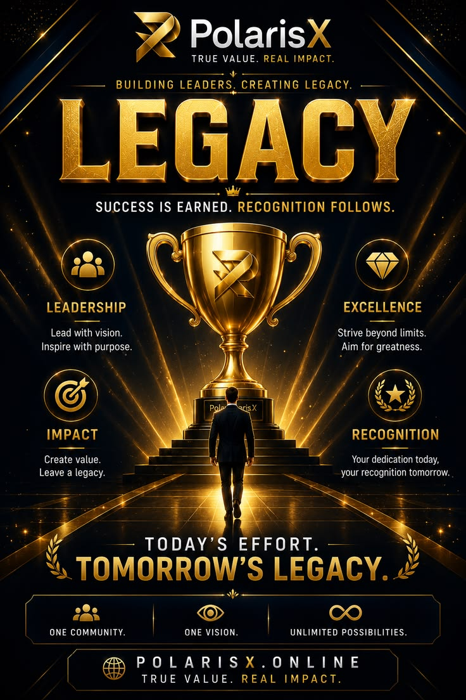

John Longar Abuoch Longar
Technology Enthusiast | Cybersecurity Analyst | Full Stack Developer
Learn More About Me
My name is John Longar Abuoch Longar, and I am an aspiring Cybersecurity Analyst and Full Stack Developer with a strong passion for technology, digital security, and software development. My interest in technology comes from my desire to understand how digital systems work, how information can be protected, and how technology can be used to solve real-world challenges. I believe that technology is one of the most powerful tools for creating opportunities, improving communities, and connecting people across the world.
My journey in technology has been built through dedication, continuous learning, and a strong commitment to personal and professional growth. I have developed a foundation in cybersecurity, where I have gained practical knowledge in cybersecurity fundamentals, network security, vulnerability assessment, cyber hygiene, digital safety practices, and basic security principles. These skills have helped me understand the importance of protecting digital information, identifying potential risks, and creating safer online environments.
During my cybersecurity learning journey, I have explored different areas related to information security, including understanding cyber threats, security weaknesses, and ways to reduce risks. I have learned the importance of maintaining secure systems, protecting sensitive information, and following responsible digital practices. I am interested in advancing my knowledge in areas such as ethical hacking, penetration testing, security monitoring, incident response, and defensive security strategies. My goal is to continue improving my cybersecurity abilities and become a professional who can contribute to building safer digital spaces.
Alongside cybersecurity, I am currently expanding my skills in Full Stack Development through the MERN Stack. I am learning and applying modern web development technologies, including MongoDB, Express.js, React.js, and Node.js, to create dynamic and responsive web applications. Through this training, I have developed an understanding of both frontend and backend development, including designing user interfaces, managing databases, creating APIs, and developing complete web solutions.
I enjoy the process of transforming ideas into functional digital products. Building applications has improved my creativity, logical thinking, and problem-solving abilities. I believe that combining cybersecurity knowledge with software development skills allows me to create applications that are not only useful but also secure and reliable. My aim is to develop technology solutions that provide value to users while maintaining strong security standards.
My personal journey has shaped me into a resilient, disciplined, and determined individual. The challenges I have experienced throughout my life have taught me the importance of patience, perseverance, adaptability, and maintaining a positive mindset. These experiences have strengthened my ability to overcome difficulties, remain focused on my goals, and continue working toward success even when facing obstacles.
I consider myself a lifelong learner who is always willing to explore new ideas, improve existing skills, and adapt to changes in the technology industry. The field of technology is constantly evolving, and I believe continuous learning is necessary to remain effective and innovative. I regularly seek opportunities to practice my skills, learn new tools, and gain practical experience that can prepare me for future challenges.
In addition to technical skills, I value important professional qualities such as teamwork, communication, leadership, problem-solving, and critical thinking. I believe successful technology professionals need both technical knowledge and strong interpersonal skills. Working with others, sharing knowledge, and collaborating on projects are important parts of growth and development.
My career goal is to become a skilled cybersecurity professional and software developer who can contribute positively to the technology community. I want to use my knowledge and skills to develop secure digital solutions, support innovation, and help individuals and organizations understand the importance of cybersecurity. I am committed to continuously improving myself and building a career based on integrity, dedication, and excellence.
I believe that technology has the ability to change lives, create opportunities, and solve many challenges facing society today. Through my continued education and professional development, I hope to become part of a generation of technology professionals who use their skills to create a safer, more connected, and more innovative future.
MY JOURNEY EXPERIENCE.
Cybersecurity
Learning security skills

Web Development Progamming
Programming Languages
My Educatinal Journey
The Hardship i Experience in Education

Experience
What i am Perfect at it.

Certificates
What i Achieved in Life.

Projects
My Outcome Toward my Skills
Let's Work Together
Building secure and creative digital solutions